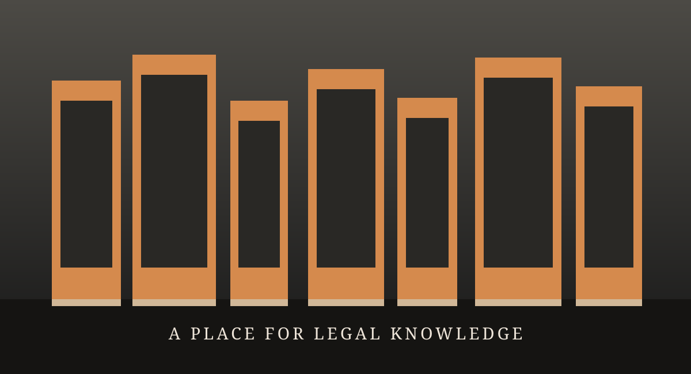

Law comes first
We focus our bookselling experience on the needs of legal learners and practitioners.
National Law Books Agency brings together a specialist bookstore and a publishing house, serving readers across Jammu and Kashmir.

We believe a good legal book is more than a reference. It is a companion through a demanding course, a useful tool in practice, and a way to keep learning.
Our collection centres on law books and includes practical stationery and law-inspired accessories. We also publish selected titles of our own, bringing a reader-first perspective to legal learning.
We serve individual readers, legal offices, and institutions throughout Jammu and Kashmir. If you are sourcing books for a group, our team can help with a bulk enquiry.
Browse the collectionWe focus our bookselling experience on the needs of legal learners and practitioners.
Our own publications reflect our commitment to accessible legal knowledge.
Questions, availability, and bulk requirements are handled directly by our team.